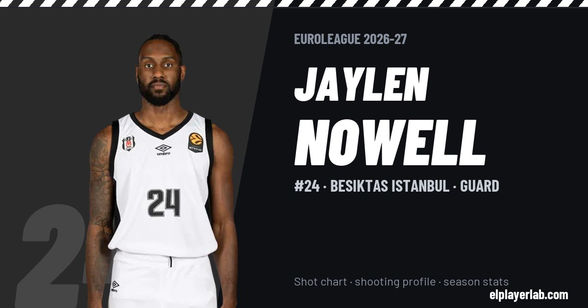

Besiktas Istanbul · Euroleague 2026-27
Jaylen Nowell
#24 · Guard · Besiktas Istanbul · 2026-27 · 1 games · 17.0 pts · 4.0 reb · 2.0 ast a game

- Number
- 24
- Position
- Guard
- Height
- 191 cm
- Weight
- 90 kg
- Born
- 1999-07-09
- Country
- United States of America
Career
- Besiktas 2026-2027
- Gigantes de Carolina 2026
- Shanxi Loongs 2025-2026
- Capital City Go-Go 2024-2025
- New Orleans Pelicans (NBA) 2024-2025
- Detroit Pistons (NBA) 2023-2024
- Stockton Kings 2023-2024
- Memphis Grizzlies (NBA) 2023-2024
- Iowa Wolves (loan) 2019-2020
- Minnesota Timberwolves (NBA) 2019-2020
- Washington (NCAA) 2017-2019
Euroleague Player Lab: shot charts, shooting profiles and season stats for every player, rebuilt after every game.